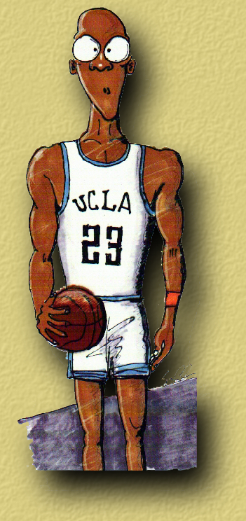
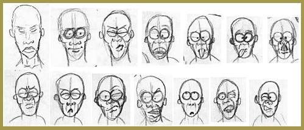

It was during the period of 1991, when the sun seemed like it was up longer than ever; when the birds chirped a little louder; when the miniskirts got even shorter. It was definitely spring time at UCLA. As I struggled to make it through the last stretch of my 5-year stint at UCLA as a Computer Science/Engineering student, there was only one reason to wake up in the morning. It was to finish "Michael."
Dan MacLaughlin, the renown professor at the UCLA Animation Workshop, had given us less than 4 weeks to conceive, storyboard, pencil test, animate, and film our term project. It was the perfect antidote to those miniskirts! Dan gave us the mission to stretch our imagination and commit to film.
This was my first attempt at a childhood dream... to create a cartoon character and animate it. After many years of afterschool Bugs Bunny and Daffy Duck, it was time to find out whether any of it stuck with me and whether some of that Tex Avery'ism would rub off.
Since this was an "introductory" class, the requirement was to only animate 15 seconds of footage with no audio soundtrack. Sounded reasonable at first until simple math (15 sec * 24 fps = 360 frames) revealed exactly how many frames I had to ink and paint individually. Even though we were working in "2's," there was still lots of work to set up multi-layer cels for backgrounds and specialFX shots. It was quite clear that those miniskirts would have to wait.
"15 seconds!!!"... I screamed... that's not enough time to say much or to tell an entertaining story. Even though, 15 seconds appealed to my Spring Fever, I was still driven by my ambitious passion to tell a longer story.
What could I possibly animate in 15 seconds that would both be entertaining and would make a statement? After many days of brainstorming, I decided that a commercial would be the perfect medium. I thought to myself, "Heck, if people can sell a product in a 15 or 28-second ad slots, then it must be possible for me to communicate an idea in that amount of time." So "Nike Air Bruin" was born.
A quick character profile of a Michael Jordan'ish character was sketched out and his various expressions drafted.

The Making of Nike's "Air Bruin"
a short animation by Sam Chen
UCLA Animation Workshop 1991
Miniskirts..
"The Longest 15 Seconds of My Life...."
Storyboardin'...